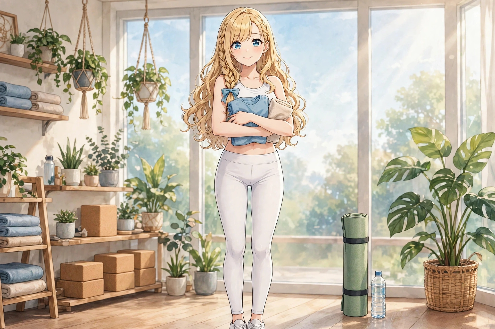
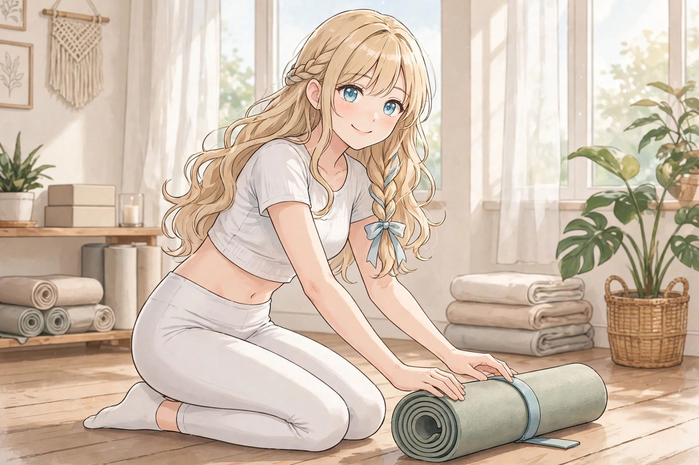

ヨガマットの選び方｜厚さ・素材・レンタルの活用

「ヨガを始めるのに、まず何を買えばいいの？」——そんな疑問に答える第3回は、ヨガマットの選び方です。厚さ・素材・サイズの見方と、買う前にレンタルで試す方法をまとめました。案内役はセラフィナです。
マットの役割は、滑りにくさとクッション性
ヨガマットは、床の上でポーズを取るときの滑り止めとクッションの役割があります。フローリングの上で直接ポーズを取ると足裏が滑ったり、膝をついたときに床の硬さを感じたりします。マットがあると足裏が安定し、座りポーズや膝立ちのポーズも取りやすくなります。マットはヨガを続けるうえで、最初に揃えたい道具のひとつです。
厚さの目安は4mm・6mm・10mm・15mm
マットの厚さは、主に4mm・6mm・10mm・15mmの4段階です。4mm前後の薄手は軽くて持ち運びやすく、立ちポーズで足裏の感覚をつかみやすいのが特徴です。6mm前後は初心者の定番とされる厚さで、クッション性と安定性のバランスが取りやすいです。10mm・15mmの厚手は膝や腰への当たりがやわらかく、座りポーズやストレッチ中心の人に向いています。ただし厚いほど立ちポーズでぐらつきやすくなるので、自分のするポーズに合わせて選ぶのがポイントです。
素材の違いは、滑りにくさ・重さ・におい
素材はTPE・PVC・NBR・天然ゴムなどが一般的です。TPEは軽くて折りたたみやすく、持ち運びに向いています。PVCは滑りにくく手入れがしやすい定番素材です。NBRは厚手のマットに多く、クッション性があります。天然ゴムはグリップ力が高い反面、重めでゴム特有のにおいが出ることもあります。開封直後は素材のにおいが気になる場合があるので、風通しのよい場所で広げてから使うとよいでしょう。
サイズと持ち運びもチェックする
マットのサイズは、長さ183cm・幅60cm前後が一般的です。身長が高い人は長さ190cm前後のロングタイプも検討しましょう。幅が広いタイプは、横に動くポーズで余裕があります。スタジオに毎回持っていく人は、重さと巻きやすさも確認しておくと安心です。収納バンドやケースが付いていると、持ち運びや保管がしやすくなります。折りたたみ式はバッグに入れやすく、旅行や出張先でも使いやすいです。
最初はレンタルで試すのもおすすめ
買う前に、スタジオのレンタルマットで試すのもよい方法です。多くのスタジオがマットのレンタルを用意していて、無料のところもあれば1回200〜300円程度のところもあります。レンタルで厚さや素材の感触を確かめてから、自分のマットを買うと失敗しにくくなります。体験レッスンのときは、レンタルの有無を事前に確認しておきましょう。続けることが決まったら、お気に入りの1枚を選んでみてください。
買うときのチェックリストとお手入れ
買うときは、厚さ・素材・サイズ・重さ・滑りにくさ・収納方法の6点をチェックしましょう。お手入れは、水拭きや専用クリーナーで軽く拭くのが基本で、使ったあとは陰干ししてしっかり乾かします。直射日光や高温の場所での保管は避けましょう。表面がすり減って滑りやすくなってきたら、買い替えの目安です。次回は「基本の呼吸法」を取り上げます。
この記事に出てきたウェア・用品
※このブロックの商品リンクには広告（アフィリエイト）が含まれます。価格とレビューは2026年11月25日時点の表示です。

ヨガワークス ヨガマット（6mm）
初心者にちょうどいい厚さ。軽くて持ち運びやすい定番マット
★4.54（レビュー2,373件）
4,490円
税込・送料無料／Puravida-プラヴィダ（楽天市場）
楽天市場で見る
DABADA ヨガマット 厚手 10mm 15mm NBR
厚さ10mm・15mmから選べる厚手NBRマット。収納バンドとメッシュケース付き
★4.32（レビュー12,650件）
1,980円〜
税込・送料無料／DABADAストア 楽天市場店
楽天市場で見る
Soomloom ヨガマット 10mm 15mm
4サイズから選べる極厚タイプ。カラー8色、収納バンド・ケース付き
★4.45（レビュー10,945件）
1,650円〜
税込・送料無料／NeverChange楽天市場店
楽天市場で見る
Lino Mirai ヨガマット 10mm 15mm 厚手 NBR
厚手NBRで膝への当たりがやわらかめ。レビュー4,600件超の実績
★4.19（レビュー4,673件）
2,000円〜
税込・送料無料／LINO MIRAI
楽天市場で見る
Gruper ヨガマット ロール式・折りたたみ式 6mm
TPE素材の折りたたみ式。軽くて持ち運びやすく、両面カラー
★4.52（レビュー4,410件）
2,682円〜
税込・送料無料／ライブリー
楽天市場で見る
ヨガワークス ヨガマット 6mm スタンダード
初心者の定番とされる6mm厚のスタンダードモデル。滑りにくさが特徴
★4.57（レビュー2,626件）
3,830円
税込・送料無料／スタイルデポ（楽天市場）
楽天市場で見る
ヨガソックス 5本指 滑り止め付き（Mee Yoga）
指あり・指なしの2タイプが選べる。足裏のシリコン滑り止めでマットの上でも踏ん張りやすい
★4.50（レビュー16件）
1,180円
税込・送料無料／Mee（ミー）楽天市場店
楽天市場で見る関連記事
あわせてチェック｜Simple Yoga Lifeのおすすめ
・特集：韓国ヨガウェア（ゼクシーミックス）…人気レギンスや上下セットを、楽天の実測価格とあわせて紹介しています
・セラフィナのスタンプ＆おうちヨガ用品コーナー…マットやブロックなどのおうちヨガ用品と、LINEスタンプをまとめています